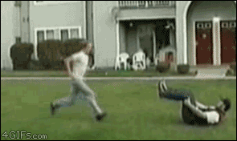

The greatest feeling is knowing you got up before the sun. It's hard, but it's like the most important key to success. It helps to prepare clothes and just actions in general the night before. It's also very rewarding to take advantage of the silence of the morning by deep breathing outside.
The magical potion of healing is a great way to start the day. I just need something to fill the gap between making the brew. Drink as much water and tea as you can. And then make sure to read, watch and strum the guitar.
I like to watch videos to learn. And when I watch educational videos, it's very rewarding. You can literally learn anything, but I make sure I stick to the important videos first like coding. Also have to beware of the possibility to get caught up in some titties.
Getting passed the Tea process without eating is key man. Eating makes me unable to stretch. If I can't stretch, I feel very unfulfilled. And that's no way to start the day.
Getting to work on time is another great way to feel good. When we get there on time, we work harder and everything seems so more legit Then you just have to make sure you make circles and code in that order. If we can get to Giant Eagle and grab some lettuce for dinner yeah.
Throughout the day I want to focus on a few things that will make me feel good at the end of the day. I want to keep an eye on my posture, keeping my core engaged whenever possible. Also try to BE as relaxed as possible all day, like slow movements and relaxed tone. The other thing I want to make sure I do is to just shut up and smile.
To end the day is as important as the begining of the day. Work on your Skating, Basketball and Fitness and Spiritualality. Update yourself on what you've accomplished and plan for the next day with BxH. A brisk walk comboed with a bath and deep breathing makes for a good sleep.